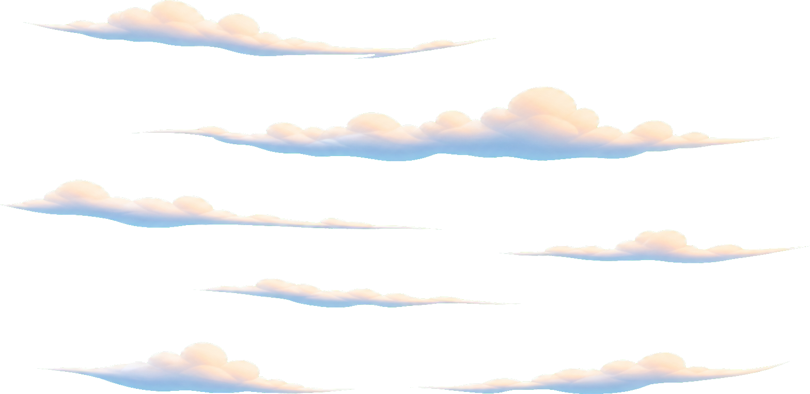
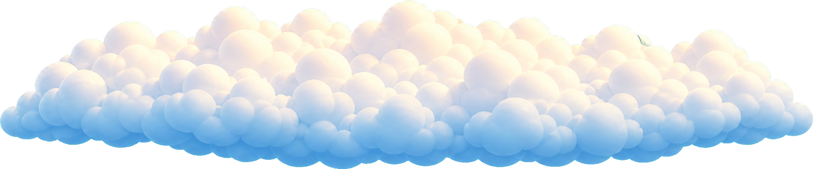
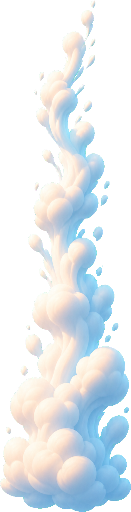

<!doctype html>
<meta charset="utf-8">
<title>Cloud Sprite Candidates</title>
<style>
  body {
    margin: 0;
    font-family: system-ui, sans-serif;
    color: #234;
    background: linear-gradient(#77c7ff, #f9d58c);
  }
  main {
    max-width: 1100px;
    margin: 0 auto;
    padding: 28px;
  }
  h1 {
    margin: 0 0 18px;
    font-size: 22px;
  }
  .grid {
    display: grid;
    grid-template-columns: repeat(auto-fit, minmax(240px, 1fr));
    gap: 18px;
  }
  figure {
    margin: 0;
    padding: 14px;
    border: 1px solid rgba(255,255,255,.55);
    border-radius: 8px;
    background: rgba(255,255,255,.22);
  }
  img {
    display: block;
    width: 100%;
    height: 220px;
    object-fit: contain;
  }
  figcaption {
    margin-top: 10px;
    font-size: 13px;
  }
</style>
<main>
  <h1>Cloud Sprite Candidates</h1>
  <div class="grid">
    <figure>
      
      <figcaption>cloud_wisp_far - 遠景の薄いすじ雲</figcaption>
    </figure>
    <figure>
      
      <figcaption>cloud_sea_mid - 中景の雲海</figcaption>
    </figure>
    <figure>
      
      <figcaption>cloud_cotton_near - 近景の綿雲</figcaption>
    </figure>
    <figure>
      
      <figcaption>cloud_stream_vertical - 縦に流れる雲片</figcaption>
    </figure>
  </div>
</main>
